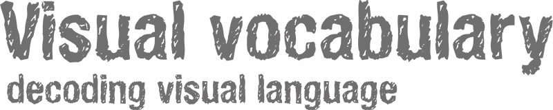

Modern humans have the ability to interpret, evaluate, and infer meaning from information presented in the form of an image. How images are ‘read’ depends on the visual codes and conventions that exist in our society.
In order to understand visual language, several persons from different backgrounds were asked to draw various concrete and abstract concepts, using their imagination. The outcomes of this project show the richness and variety of ideas in society’s visual memory.

27/03/15
Today a lot of people have been contributing to my project! I have been operating in a lot of overcrouwded trains. Amsterdam was out of engery for a while, so for a lot of peple it took a lot of time to get from A to B by train. I tried to use this situation for my project and tried to make make the best of it together with my fellow travelers. I have been meeting a lot of nice, interested and enthousiastic people! If I'm talking about you, thanks for contributing, you are awesome!
24/03/15
From now on I'm online! :) Ok, this website is not build in a proper way, but I already needed to have a link to refer to. During my work process I will improve this website, make it interactive, well designed and so on. Your drawings will also be online soon! I will keep you updated on the progress of my project. But first I need to gain more drawings by different people.

The lanuage of drawings is universal and can not be replaced by any other language. Drawing is an universal skill, you are also able to do it very well! Remember:
- Bad drawings do not exist!
- The process is the product.
- Your personal thoughts are the best material.
- You don’t need to be an artist to come up with great things. - The most important is what you are expressing, rather than esthetics.
- Try your best, or not if you don’t want to, but try to put some lines on the paper!
- And, the most important: have fun! :)